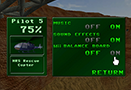
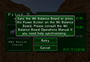

4 |
Vorbereitung des Controllers |
 |


Hinweis: Wenn der Stopper an der Handgelenksschlaufe über einen Hebel verfügt, dann schließe den Hebel, bis du einen Klick hörst, damit sich der Stopper nicht löst.
Befolge die folgenden Hinweise, um dein Wii Balance Board zur Verwendung vorzubereiten. Wenn das Wii Balance Board an deiner Wii-Konsole registriert wurde: 
Du schaltest das Wii Balance Board im ‚Optionen’-Menü ein.
Wenn das Wii Balance Board nicht an deiner Wii-Konsole registriert wurde: 
Wenn der Bildschirm auf der rechten Seite wird angezeigt, folgen Sie den Anweisungen.
|


 |
 |
 |